Automatic Engine Start-Stop Function
Automatic Engine Start-Stop Function
Automatic engine start-stop function
The new automatic engine start-stop function (MSA) is a basic element within the array of measures designed to reduce CO2 emissions. By automatically switching off the engine whenever the vehicle is stationary this system reduces fuel consumption. The restart also takes place automatically as soon as the corresponding switch-on conditions required for switch-on are met.
MSA is being introduced in BMW 1-Series, 3-Series and MINI vehicles equipped with manual transmission and 4- cylinder engine. Additional engine versions and vehicles with automatic transmissions are slated for subsequent introduction.
NOTICE: Observe the official designation used by Marketing.
The marketing designation is Automatic Start/Stop Function.
MSA function, concept
During normal vehicle operation the MSA automatically switches off the engine whenever the vehicle is stationary and other salient vehicle-related conditions are satisfied.
Examples (for matrix refer to chapter on "system functions"):
- Vehicle stationary
- No gear engaged
- Clutch pedal not depressed
- Engine temperature not too low
- Ambient temperature above -3 °C
- Brake vacuum sufficient
- Battery's charge status is adequate
- Driver's seatbelt is engaged
- Vehicle has not just been operated in reverse
The automatic engine shutdown is complemented by an equally automatic engine restart that is initiated as soon as the clutch pedal is depressed again, or if other demand factors are detected.
Sample scenario: The engine is switched off while the vehicle is stationary at a red light and when it comes to a halt in stop-and-go traffic.
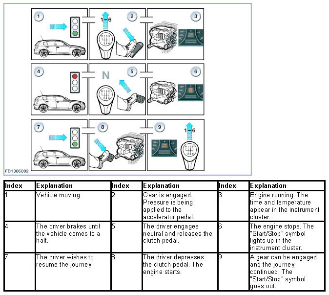
IMPORTANT:
On vehicles with MSA the engine can also restart automatically without any action on the part of the driver. Irate customers and customer complaints based on this system characteristic are not signs that a malfunction is present. Samples of conditions under which a fully-automatic engine start is executed without driver action include:
- A/C request signal: For instance, in response to condensation on the windscreen.
- Low brake booster vacuum: Low brake vacuum can lead to safety risks during braking maneuvers. The engine restarts to rectify this condition.
- Engine stalls.
- Severe battery discharge: A discharged battery can lead to a vehicle breakdown. The engine restarts to rectify this condition.
- Vehicle starts moving from a stationary starting point on an incline: When the vehicle (engine) is switched off numerous systems are deactivated. Without the support supplied by various vehicle systems a rolling vehicle constitutes a safety hazard. The engine restarts to rectify this condition.
Brief component description
The MSA function is located in the engine electronics (DME or DDE). Various information from the bus systems is used for the MSA. The following components are also required. The following components for the MSA are described:
- Neutral sensor (new)
- Brake vacuum sensor (new)
- MSA button (new)
- DC/DC converter (new)
- AGM battery (new)
- Clutch switch
- Engine compartment lid contact switch
- Seat belt buckle contact (driver)
- Alternator
- Starter motor
Zero-gear sensor
The zero-gear sensor is mounted on top of the gearbox housing. The zero-gear sensor detects the idle position of the gearshift lever.
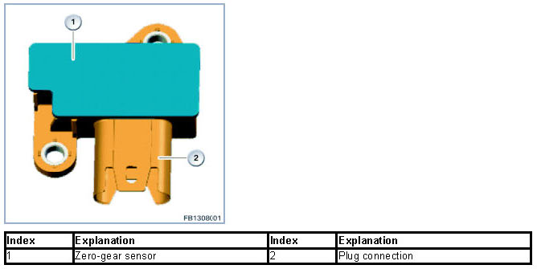
Brake vacuum sensor
The brake booster is equipped with a vacuum sensor to help ensure that adequate brake-application force will remain available under all conditions. The brake vacuum sensor is located next to the brake booster, to which it is connected by a separate line.
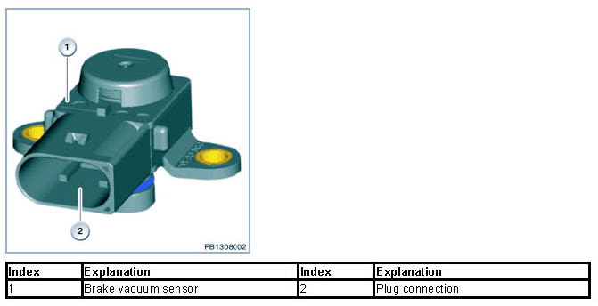
IMPORTANT: The MSA will respond to inadequate brake vacuum by starting the engine without any action of any kind on the part of the driver. Low brake vacuum can lead to safety risks during braking maneuvers: for instance, when starting on a slope. The engine restarts to rectify this condition.
MSA button
The MSA button (MSA OFF) in the center console control panel can be used to deactivate the MSA. The MSA is reactivated each time the electrical status of Terminal 15 changes (Terminal 15 OFF and then ON again) as well as when the MSA button is pressed repeatedly.
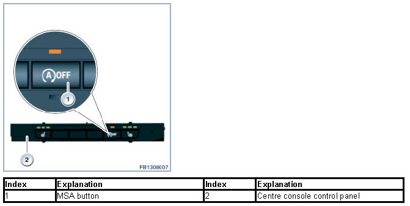
DC/DC converter
Due to the considerably more frequent occurrence of starting operations, the electrical load that occurs often leads to voltage dips in the vehicle electrical system. To ensure a consistent voltage supply to specific electrical components that are especially sensitive to voltage variations, a DC-DC converter is installed on vehicles with MSA. The DC/DC converter supplies both "Terminal 30" relays with a constant voltage that even remains consistent during engine starts.
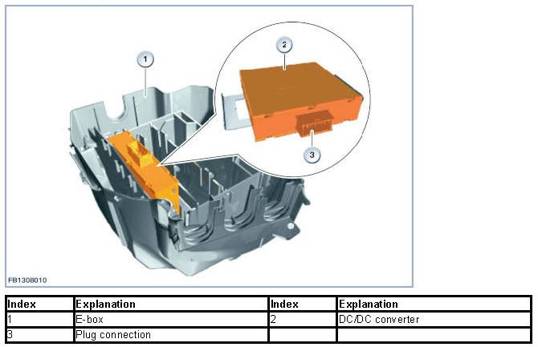
The DC/DC converter is fitted in the electronics box in the engine compartment.
The electronics use the input voltage and terminal 50 measuring cables to determine whether or not the voltage supply of the output is supplied via the bypass or via the DC/DC converter. In bypass mode, the vehicle voltage is not supplied via the DC/DC converter, but is transferred directly to the outputs. In the booster phase, the vehicle voltage is adapted.
AGM battery
In all cases, the MSA comes with the intelligent generator control. The much more frequent charge and discharge cycles mean that the load on the battery is very high. The cycle resistance of AGM batteries means that they achieve similar results with regard to service life despite the high load.
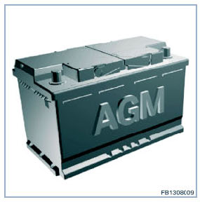
IMPORTANT: Observe installation instructions for AGM battery.
In all cases, an AGM battery must be installed and registered in the vehicle for the MSA to work perfectly.
Clutch switch
The present clutch switch is used as an input variable for the MSA to detect clutch control.
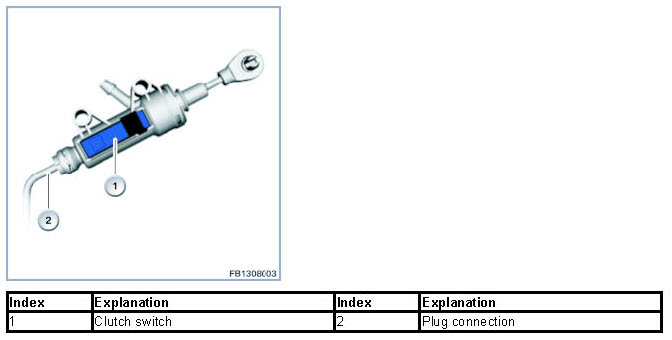
Engine compartment lid contact switch
The engine compartment lid contact switch is included as an influencing factor in the calculation of the MSA. If the engine compartment lid is opened, the engine must not be started or stopped by the MSA for safety reasons.
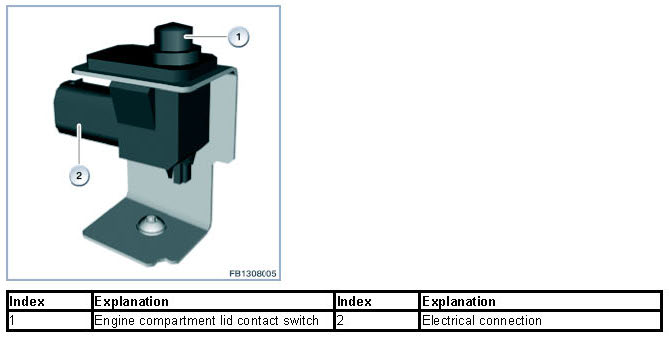
IMPORTANT: When the engine compartment lid contact switch is faulty, the Automatic Start/Stop function will be suppressed. With the engine compartment lid contact switch disconnected, the "switch closed" information is issued. The MSA is active and an automatic engine start can take place.
Seat belt buckle switch (driver)
Via the seat belt buckle switch, the MSA can detect that the driver has fastened his or her seat belt. If the driver has not fastened his or her seat belt, the MSA reacts as follows:
- With the engine running, a switch-off inhibitor is set.
- With MSA stop, the MSA is disabled. A restart is possible using the START-STOP button.
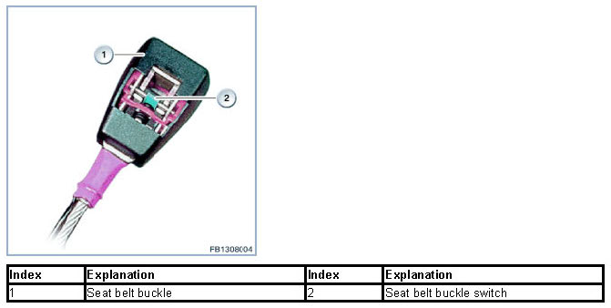
Alternator
A more powerful alternator is installed to compensate for the higher rate of battery discharge associated with engine stops initiated by the MSA.
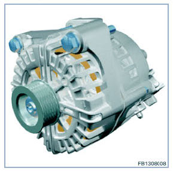
Starter motor
In conjunction with the MSA, the starter motor must do a great deal more work. The starter motor is therefore configured for a significantly higher number (approx. 8 times) of start cycles. The components of the starter motor have been adapted to the higher requirements.
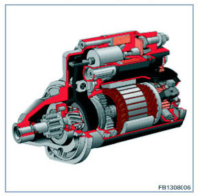
System functions
The following MSA system functions are described:
- System wiring graphic
- Operational strategy: MSA enabled or deactivated
- Display concept: Displays related to MSA
- Power management
System wiring diagram
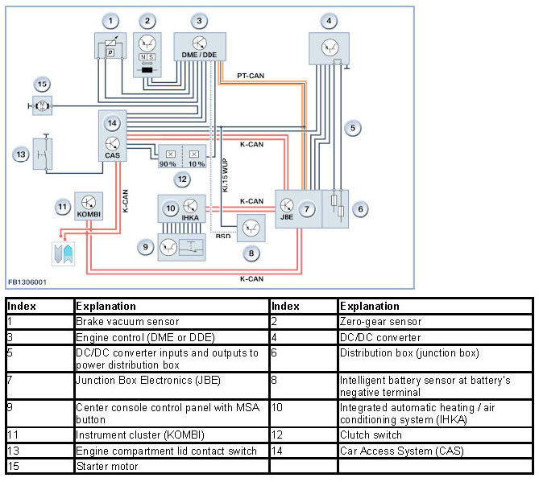
Operational strategy: MSA enabled or deactivated
This function activates automatically and then remains in readiness after each engine start. The function can be manually deactivated until the next change of status at the power-supply terminal using the MSA button. When the button is depressed an LED remains lit to signal deactivation.
During diagnosis sessions the MSA is temporarily deactivated owing to safety considerations (remains deactivated until next change in terminal power status). This is to avoid a possible automatic engine start while service work is being performed in the engine compartment. The temporary deactivation status remains constantly visible as "MSA deactivation detected" in the control unit functions. If the control unit functions fail to recognize a vehicle with MSA this is visible as "MSA installation check" and/or "MSA code status".
IMPORTANT: Take precautions to ensure personal safety.
To ensure personal safety it is absolutely vital that personnel remain consistently conscientious and always confirm that the automatic engine start/stop function has been deactivated before starting work in the engine compartment.
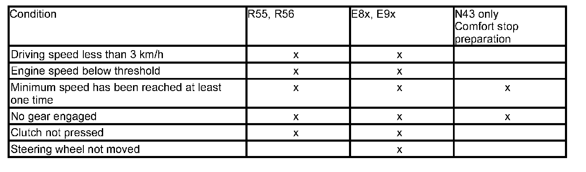
NOTICE: Definition of Comfort Stop.
Comfort Stop relies on reduced charge density to prevent the engine from shaking. The Comfort Stop function discharges the air from the intake manifold/plenum chamber (engine continues running for 1 second).
Switch-off prevention:
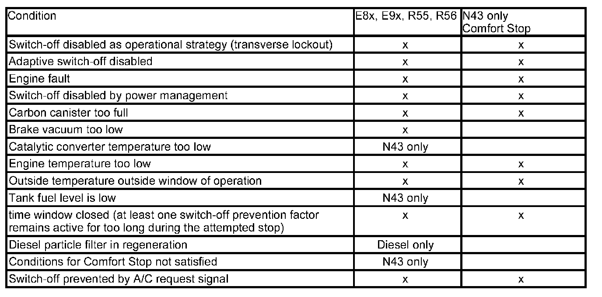
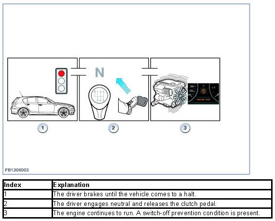
Engine start request (simultaneously disables the preparations for Comfort Stop at N43):
Condition E8x, E9x, R55, R56
Clutch depressed through more x
than 10 % of travel range
Vehicle starting to roll x
Brake partial vacuum inadequate x
Engine-start request from power x
management
Engine-start request from A/C x
request signal
Engine start prevention:
Condition E8x, E9x, R55, R56
No idle or clutch pedal not in x
end position
Engine has just stopped: Safety x
function intended to ensure secure
engine shutdown. Otherwise the
starter gear could re-engage
while the engine is still
turning over.
All conditions as well as the general status information can be accessed using the "MSA system check" service function.
The "Read AV memory" service function can be consulted to view a history of the most recently stored "deactivation disabled" events. This feature can be used to assess earlier customer complaints.
Display concept: Displays related to MSA
A display appears in the instrument cluster whenever the MSA switches off the engine. The following symbol appears in the LC display between the round instruments:
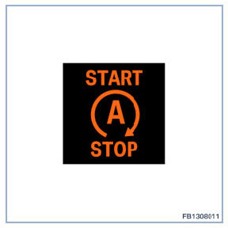
Two supplementary Check Control messages are also available for the MSA.
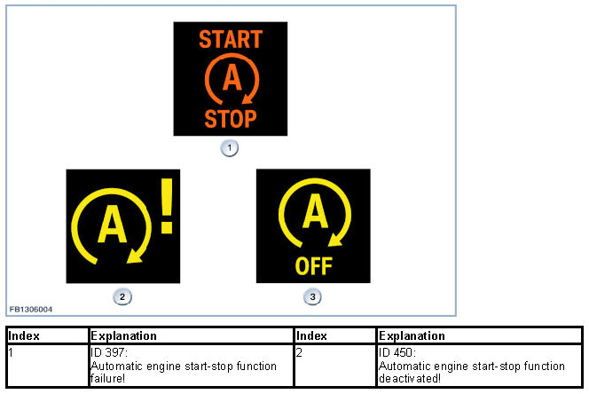
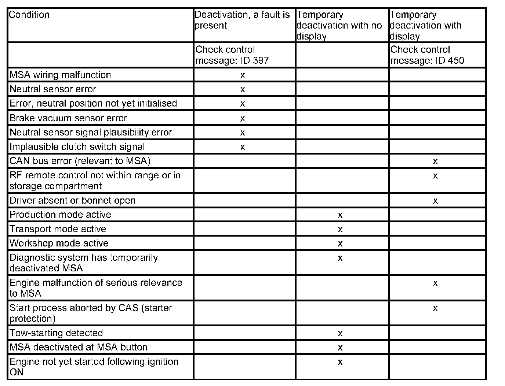
A Check Control message appears when a system error (with or without a required component replacement) is active or the MSA is deactivated.
The corresponding readouts can be accessed with the "MSA system check" and "AV memory readout" service functions.
Other service functions support supplementary plausibility checks and test functionality (exception: neutral sensor learn/write).
Power management
The battery condition calculated in the Advanced Power Management (APM) module has a substantial effect on the MSA. The objective is to ensure a reliable engine start following a defined downtime based on the status of the onboard electrical system. The APM monitors the following data:
- Charge state of battery
- Battery temperature
- Voltage dip on engine start
- Power requirement of switched-on consumer units
The results of these calculations can either disable an engine stop request or enable an engine start request from the MSA.
Excessive power consumption must be avoided when the engine is off. This is why the APM either deactivates all major consumers of electrical power or reduces their consumption rates whenever Terminal 15 is ON but the engine is OFF. The displays remain active.
The following consumers of electrical power are affected:
- Heated rear window
- Mirror heating
- Seat heating
- Heater blower
IMPORTANT: Automatic starts remain possible.
If the battery's charge status falls below a specific threshold following an engine stop initiated by the MSA, the MSA will respond by restarting the engine without any action on the part of the driver.
Note for Service department:
General notes
The MSA is operational only under specific conditions (see operating conditions). These conditions should always be assessed in response to customer complaints.
Automatic deactivation of Terminal 15 starting in 03/2007 on vehicles with automatic engine start-stop function (MSA - option 1CC).
Terminal 15 is switched off automatically by the signal from the door contact when the driver's door is opened or closed (engine OFF). Terminal 15 can be permanently switched on again by subsequently pressing the Start-Stop button.Perform this process before programming or diagnosing a vehicle.
Replacing the neutral sensor
Always follow the instructions in the "Learn/write neutral sensor" service function when replacing the neutral sensor. Unless the sensor is installed correctly its functionality will be either absent or inaccurate.
Be sure to comply with safety precautions for work on vehicles with MSA.
Always ensure that the MSA has been switched off in order to prevent an automatic engine start during work in the engine compartment.
Faults for the MSA
When faults (DTCs) related to the MSA are stored this leads to deactivation of the automatic engine start-stop function.
MSA and power management
The MSA is strongly networked with the power management. When the battery is replaced, a terminal is disconnected or the engine control is programmed, the reference data for battery charge status may be lost. The data will only be available once again following a standby (parasitic) current measurement lasting roughly 6 hours (for instance, overnight standby current measurement without a charger connected) with no vehicle wake-up during this period. In this time, the MSA is inactive. The customer must be notified of this when the vehicle is handed over. The MSA switches back automatically to active as soon as the necessary routine have been completed successfully.
Diagnosis instructions
The following test modules are available for testing components:
- Zero-gear sensor
- Brake vacuum sensor
- Clutch switch
- MSA button (network connection to center console control panel)
- MSA door contact (network connection with FRM)
- DC/DC converter (network connection with JBE)
- MSA power management (information on the onboard electrical system, along with on the last switch off inhibitor or activation request source, obtained from power management)
The "Read out AV memory" service function can be used to read out the history of the most recently stored switch-off inhibitors.